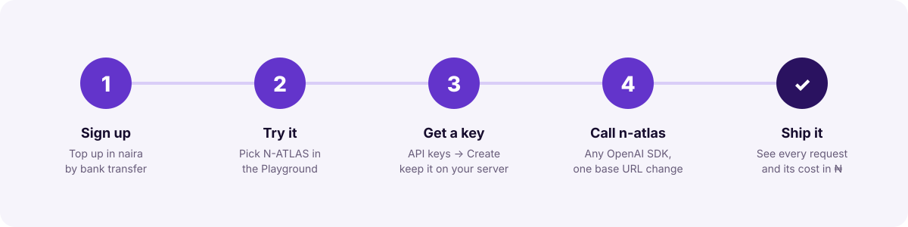
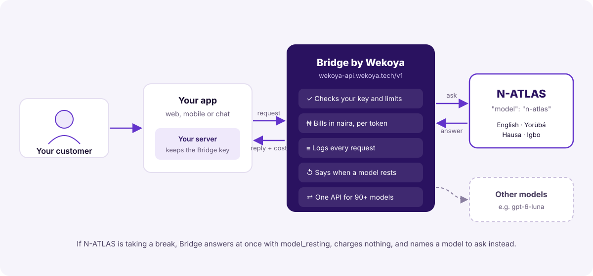
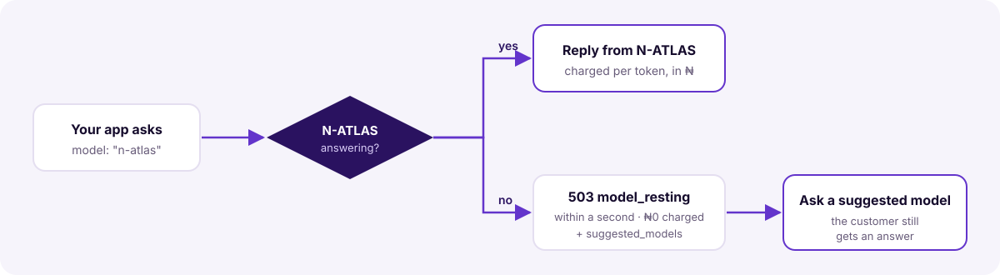

How to add Nigeria's multilingual model to your product: setup, API, costs, error handling and production practice.

N-ATLAS is Nigeria's multilingual large language model. It understands and writes English, Yorùbá, Hausa and Igbo, so a product can answer people in the language they wrote in.
Bridge by Wekoya is an AI API built for Nigerian developers. It gives you N-ATLAS, and 90+ other models, through one key, with billing in naira. You don't download the model, rent a GPU or run an inference server. If you can call the OpenAI API, you can call N-ATLAS.

model_resting within a second, charges nothing, and names models you can ask instead.Sign up at bridge.wekoya.tech. Under Billing, add money in naira:
There is no subscription. You pay only for what you use.
Open Playground in the console, choose N-ATLAS from the model list (marked Preview), and write in English, Yorùbá, Hausa or Igbo. Each reply shows what it cost.
Under API keys, create a key. It starts with wk_live_ and is shown once. Store it as an environment variable on your server:
export BRIDGE_API_KEY=wk_live_...Optionally set a monthly spending limit on the key (Section 10).
curl https://wekoya-api.wekoya.tech/v1/chat/completions \
-H "Authorization: Bearer $BRIDGE_API_KEY" \
-H "Content-Type: application/json" \
-d '{
"model": "n-atlas",
"messages": [{"role": "user", "content": "Báwo ni? Dáhùn ní Yorùbá."}]
}'Every request appears under Usage with its model, tokens and cost in naira. The examples repository (github.com/Wekoya/bridge-n-atlas) has ready-to-run code in curl, Python and JavaScript, and a small web app.
| Base URL | https://wekoya-api.wekoya.tech/v1 |
|---|---|
| Authentication | Authorization: Bearer wk_live_... |
| Model id | n-atlas |
| Chat endpoint | POST /v1/chat/completions (OpenAI Chat Completions format) |
| Catalogue | GET /v1/models?include=experimental |
| Format | JSON in, JSON out, UTF-8. Yorùbá, Hausa and Igbo diacritics are sent as-is. |
| Field | Meaning |
|---|---|
model | "n-atlas". Required. |
messages | The conversation: objects with role (system, user or assistant) and text content. Required. |
max_tokens | Longest reply, in tokens. Default 1,024. |
temperature | 0 to 2. Lower is more predictable, a good choice for support answers. |
stream | true for a server-sent event stream. See below. |
X-Bridge-End-User header | Optional: your own id for the person the request is for, so Bridge can track and limit what each of your users spends (Section 10). |
{
"id": "…",
"object": "chat.completion",
"model": "n-atlas",
"choices": [{
"index": 0,
"message": { "role": "assistant", "content": "Ẹ jọ̀ọ́, ẹ fi nọ́ńbà ìtọ́kasí ránṣẹ́ sí wa…" },
"finish_reason": "stop"
}],
"usage": { "prompt_tokens": 91, "completion_tokens": 48, "total_tokens": 139 },
"wekoya": { "cost": 0.05, "currency": "NGN" }
}choices[0].message.content: the reply.usage: tokens read and written. These are what you pay for.wekoya.cost: what this request cost, in naira.finish_reason: "length" means the reply reached max_tokens; raise it or ask the model to continue.With "stream": true the reply arrives as server-sent events: data: {…} chunks in OpenAI's format, ending with data: [DONE]. The last chunk carries usage and wekoya.cost. With N-ATLAS the text usually arrives in one chunk rather than word by word, so show a "typing" indicator until it comes. An error after the stream has started arrives as a chunk containing "error".
Preview models are left out of GET /v1/models unless you ask, so tools that choose a model from the list never pick one by accident. GET /v1/models?include=experimental lists it with wekoya.experimental: true, wekoya.available (whether it is answering now) and wekoya.cost_per_million.
import os
from openai import OpenAI
client = OpenAI(
base_url="https://wekoya-api.wekoya.tech/v1",
api_key=os.environ["BRIDGE_API_KEY"],
)
reply = client.chat.completions.create(
model="n-atlas",
max_tokens=300,
messages=[
{"role": "system", "content": "Reply in the language the user writes in."},
{"role": "user", "content": "Sannu! Me za ka iya yi mini?"},
],
)
print(reply.choices[0].message.content)import OpenAI from "openai"
const client = new OpenAI({
baseURL: "https://wekoya-api.wekoya.tech/v1",
apiKey: process.env.BRIDGE_API_KEY,
})
const stream = await client.chat.completions.create({
model: "n-atlas",
stream: true,
messages: [{ role: "user", content: "Nnọọ! Kedu ka ị mere?" }],
})
for await (const chunk of stream) {
process.stdout.write(chunk.choices?.[0]?.delta?.content ?? "")
}Browsers and mobile apps must not hold your key. Give your front end an endpoint on your own server, and let the server call Bridge:
// POST /api/chat on your server (Node 18+)
const reply = await fetch("https://wekoya-api.wekoya.tech/v1/chat/completions", {
method: "POST",
headers: { Authorization: `Bearer ${process.env.BRIDGE_API_KEY}`, "Content-Type": "application/json" },
body: JSON.stringify({ model: "n-atlas", max_tokens: 400, messages }),
signal: AbortSignal.timeout(60_000),
})The full app, with rate limiting, input limits, prompt-injection protection and fallback, is in examples/web-support-app. If an app really must call Bridge directly, use short-lived guest keys (bridge.wekoya.tech/docs/guest-keys).
N-ATLAS is a preview and can be unavailable for short periods. Bridge never makes you wait for it: it answers within a second and charges nothing.

HTTP 503
{
"error": {
"type": "model_resting",
"message": "N-ATLAS is taking a short break. Try again in a few minutes, or switch to another model such as gpt-6-luna.",
"retryable": true,
"suggested_models": ["gpt-6-luna"]
}
}from openai import APIStatusError
def ask(messages):
try:
return client.chat.completions.create(model="n-atlas", messages=messages)
except APIStatusError as error:
body = error.body if isinstance(error.body, dict) else {}
problem = body.get("error", body)
if problem.get("type") not in ("model_resting", "model_unavailable"):
raise
fallback = (problem.get("suggested_models") or ["gpt-6-luna"])[0]
return client.chat.completions.create(model=fallback, messages=messages)model_resting (taking a break) and model_unavailable (switched off). Don't retry N-ATLAS in a tight loop.model field) if you want to report on it.Every error has a machine-readable type and a plain-English message. Branch on the type, and show the message to people.
| Status | Type | Meaning and what to do |
|---|---|---|
| 400 | invalid_request | The body is malformed. The message names the field. |
| 400 | tools_not_supported | N-ATLAS can't use tools or function calling. Remove tools, or use another model. |
| 400 | context_length_exceeded | The conversation is too long (Section 8). Send fewer, more recent turns. |
| 400 | media_not_supported | N-ATLAS reads text only. Remove images, audio or files, or use another model. |
| 401 | unauthorized | The key is wrong, revoked or expired. Check BRIDGE_API_KEY. |
| 402 | insufficient_funds | Your balance can't cover the request. Top up under Billing. |
| 402 | key_limit_exceeded | The key reached its monthly spending limit. Raise it, or wait for the 1st. |
| 402 | end_user_budget_exhausted | That user's budget is spent. Your balance is untouched. |
| 403 | model_not_allowed | The key is restricted to other models. Allow n-atlas on the key. |
| 503 | model_resting | N-ATLAS is taking a short break. Not charged. Use suggested_models (Section 6). |
| 503 | model_unavailable | N-ATLAS is switched off for now. Not charged. Use another model. |
| 504 | timeout | A request that wasn't streamed took too long. Stream it, or ask for a shorter reply. |
The complete list for all of Bridge is at bridge.wekoya.tech/docs/errors.
| Limit | Value and advice |
|---|---|
| Context window | About 8,000 tokens for the whole conversation and the reply. Keep the system prompt short and send only the latest turns of a long chat (the examples send the last 10). |
| Reply length | Up to 1,024 tokens by default. Set max_tokens lower for short support answers: they're faster and cheaper. |
| Input types | Text only. |
| Tools and function calling | Not supported. |
| Requests not streamed | Must finish within about 25 seconds. For long answers, use "stream": true. |
| Availability | Preview: can be unavailable for short periods (Section 6). |
You pay for tokens: what N-ATLAS reads (input) and what it writes (output). A token is a piece of a word. In Yorùbá, Hausa and Igbo, words with tone marks can use more tokens than English.
| Item | Price |
|---|---|
| Input | ₦175.50 per million tokens |
| Output | ₦526.50 per million tokens |
| Refused requests, and requests while N-ATLAS rests | ₦0 |
| Subscription or monthly fee | None |
Prices are those in effect on 11 October 2026 and can change. The current price is always in GET /v1/models?include=experimental (wekoya.cost_per_million) and in the console, and each reply states its exact cost in wekoya.cost. Every charge records the price and exchange rate it used, so any line on a bill can be checked.
| Use | Tokens (in / out) | Cost |
|---|---|---|
| One short support reply | ~100 / 50 | ≈ ₦0.05 |
| One reply in a longer conversation | ~400 / 150 | ≈ ₦0.15 |
| 10,000 replies like that in a month | 4M / 1.5M | ≈ ₦1,490 |
| 100,000 such replies in a month | 40M / 15M | ≈ ₦14,900 |
Calculation: cost = input tokens × ₦175.50 ÷ 1,000,000 + output tokens × ₦526.50 ÷ 1,000,000. For example, 400 × 0.0001755 + 150 × 0.0005265 = ₦0.149.
key_limit_exceeded until the 1st.n-atlas (plus your fallback), so it can't be used for anything else.X-Bridge-End-User: <your user id> with each request. Give each user an allowance per period; Bridge tracks it and refuses with end_user_budget_exhausted once it is spent.max_tokens, trim long conversations, and rate-limit each visitor.temperature (0.2 to 0.5) for support, where consistent answers matter.model_resting and model_unavailable fall back to a suggested modelmax_tokens is set for your use caseNo. Bridge serves it. You send HTTPS requests.
Yes. Change the base URL to https://wekoya-api.wekoya.tech/v1, use your Bridge key, and set model to n-atlas.
English, Yorùbá, Hausa and Igbo.
You get model_resting within a second, you aren't charged, and the error names models to use instead (Section 6).
No. Requests that are refused, or made while N-ATLAS rests, cost nothing.
GET /v1/models?Preview models are listed only with ?include=experimental. You can still call n-atlas directly.
Not yet. It is text in, text out. For tools or images, use another Bridge model with the same key.
In the console under Usage, and on every reply in wekoya.cost.
Bridge bills in naira, funded by Nigerian bank transfer or card.
N-ATLAS is Nigeria's multilingual language model, developed by Awarri with the Federal Government of Nigeria. Bridge by Wekoya provides access to it through an API. © 2026 Wekoya Ltd.